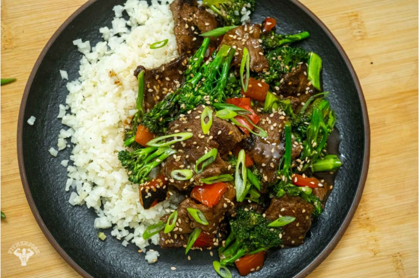

Beef & Broccoli

Good ol' broccoli and beef to make you a beast.
Ingredients:
- 1 tbsp of avocado oil
- 1 tbsp of cornstarch
- 1.5lbs of lean beef
- 1.5 tbsp garlic
- 1 large red bell pepper
- 2 cups of chopped broccoli
Sauce
- 1 cup of chicken broth
- 4 tbsp of low sodium soy sauce
- 1.5 tbsp of fresh ginger
- 1 tbsp of arrowroot
Directions:
- Toss beef in arrowroot or cornstarch.
- Set a wok or carbon steel pan on high heat. Once hot, add oil and the beef. Cook until sear marks appear, about 5 minutes. Then remove from the skillet and set aside.
- Reduce the skillet to medium and add oil, green onion and garlic. Cook until fragrant, about 2 minutes.
- Add bell pepper and sear together for 2 minutes.
- Add chopped broccoli or broccolini, then cover the pan to let the veggies soften for 2 to 3 minutes.
- Mix together the ingredients for the sauce. Add the beef to the pan and toss together. Pour in the sauce and once it starts to bubbles, stir immediately and continuously so the sauce doesn’t get slimy.
- Garnish with green onion and sesame seeds. Enjoy with your choice of brown rice, jasmine rice or cauliflower rice.